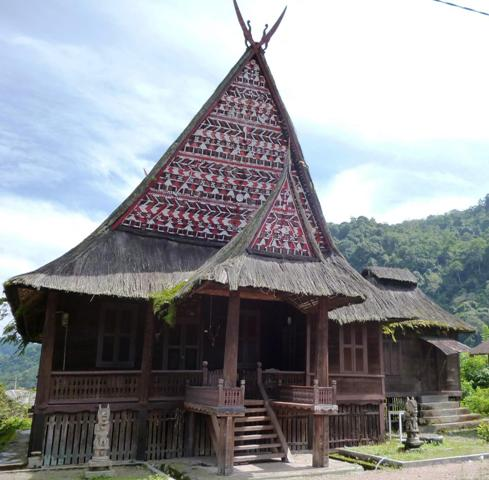
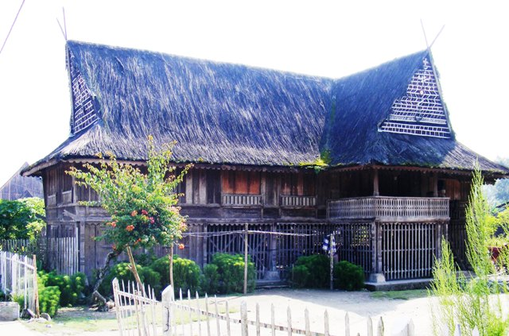

Bagas Godang (dalam bahasa Batak Mandailing) adalah bentuk rumah tradisional atau arsitektur tradisional masyarakat Batak Mandailing & Batak Angkola. Rumah besar ini dahulu sebagai tempat tinggal atau tempat istirahat raja.[1] Kompleks Bagas Godang di lengkapi dengan Sopo Godang dan Alaman Bolak.
|  |  |
Bagas Godang merupakan rumah berarsitektur Batak Mandailing dengan konstruksi yang khas. Berbentuk empat persegi panjang yang disangga kayu-kayu besar berjumlah ganjil. Ruang terdiri dari ruang depan, ruang tengah, ruang tidur, dan dapur. Terbuat dari kayu, berkolong dengan tujuh atau sembilan anak tangga, berpintu lebar dan berbunyi keras jika dibuka. Kontruksi atap berbentuk tarup silengkung dolok, seperti atap pedati.
Di Batak Mandailing, berbagai macam bentuk ornamen (hiasan) tradisional dapat kita temukan pada bagian Tutup Ari dari Sopo Godang (balai sidang adat) dan Bagas Godang (rumah besar raja).
Dalam bahasa Batak Mandailing, ornamen-ornamen tersebut disebut bolang yang juga berfungsi sebagai simbol atau lambang memiliki makna-makna yang sangat mendalam bagi masyarakat Batak Mandailing.
Pembuatan ornamen pada Sopo Godang dan Bagas Godang ini dilakukan dengan cara menganyam atau menjalin dan ada pula yang diukir. Bahan yang dipakai sebagai bahan anyaman adalah lembaran-lembaran bambu yang telah diarit dengan bentuk-bentuk terentu dan kemudian dipasang pada bagian tutup ari.
Ornamen-ornamen itu sebagian besar diberi warna merah, na hitam dan na putih yang erat kaitannya dengan kosmologi Batak Mandailing. Dalam hal ini, merah melambangkan kekuatan, keberanian dan kepahlawanan; putih melambangkan kesucian, kejujuran dan kebaikan; hitam melambangkan kegaiban (alam gaib) dalam sistem kepercayaan animisme yang disebut Sipelebegu.